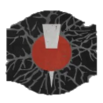

Symbol Tracker

After the third encounter you will have to climb a few floors, at the top, turn around and you will see a floating crystal to shoot, this opens a door to the left, enter it. At the back of this room will be a small square to shoot.
Back
Next